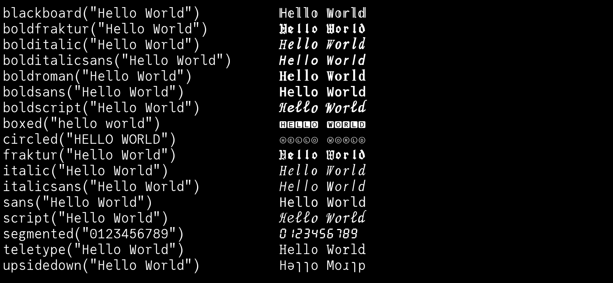
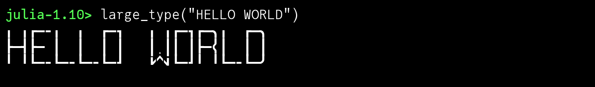
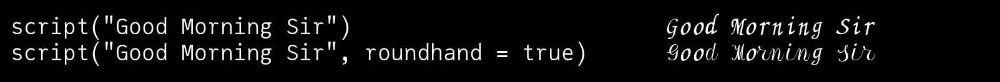

Zalgo
Z̝̫͈̝ͩ͒̔͐̑̆̔︠̈a̜̙̜̯͇̳̱ͯͫͦ͑ͦ͘͟l͙͙̻̱͌ͮ̐́ͮͯ͟͢g͚̋̈̎͋̎̒̐ͮͯͦò̻̉\n
Zalgo text is digital text that has been modified by the addition of combining characters, the Unicode symbols more usually employed to position diacritics above and below glyphs.
“Zalgo” was named for a 2004 Internet meme that ascribed it to the influence of an eldritch deity. There’s no official connection with H. P. Lovecraft’s Cthulhu.
Use the zalgo function to add diacritics to a string. The options let you control how many diacritics are used. For maximum degeneracy, set maxmarks to a large number.
using Zalgo
zalgo("Julia is cool", maxmarks=100)"J̹̭ͩu̧̞͎ͦ̏͠͝l̡̪̫̉ī̮̙͔͠a͕͑ ȉ̜̙͛͝s̖̃͟ c͉̳̣̄́ͣo̼͍̜̐̃̑ͤo̡̩ͪ̑͗l̬̔͌︢͜"Utilities
These utility functions use glyphs from the current font. Not many fonts contain all the necessary glyphs!
Because this package is useless — and occasionally bad, because it can cause some applications to misbehave — it also provides some utility functions to justify its existence.
The following functions convert the input string to equivalent characters that are to be found in the eldritch lexicon of the Unicode realm, where arcane glyphs and cryptic symbols abound.
blackboard("Hello World") # double-struck or 'blackboard' style
boldfraktur("Hello World") # bold Fraktur (black letter)
bolditalic("Hello World") # bold italic
bolditalicsans("Hello World") # bold italic sans-serif
boldroman("Hello World") # bold roman
boldsans("Hello World") # bold sans-serif
boldscript("Hello World") # bold script-style
fraktur("Hello World") # Fraktur (black letter)
large_type("Hello World") # Large Type (9 segments per glyph)
italic("Hello World") # italic
italicsans("Hello World") # italic sans-serif
sans("Hello World") # sans-serif
script("Hello World") # script
teletype("Hello World") # monospaced 'teletype'
upsidedown("Hello World") # might look like it's flipped upside down
circled("HELLO WORLD") # letters in circles
boxed("hello world") # letters in boxes
segmented("0123456789") # digits converted to 7-segment 'LED"-type display
You can see what's going on using:
julia-1.10> collect(blackboard("Hello World"))
11-element Vector{Char}:
'ℍ': Unicode U+210D (category Lu: Letter, uppercase)
'𝕖': Unicode U+1D556 (category Ll: Letter, lowercase)
'𝕝': Unicode U+1D55D (category Ll: Letter, lowercase)
'𝕝': Unicode U+1D55D (category Ll: Letter, lowercase)
'𝕠': Unicode U+1D560 (category Ll: Letter, lowercase)
' ': ASCII/Unicode U+0020 (category Zs: Separator, space)
'𝕎': Unicode U+1D54E (category Lu: Letter, uppercase)
'𝕠': Unicode U+1D560 (category Ll: Letter, lowercase)
'𝕣': Unicode U+1D563 (category Ll: Letter, lowercase)
'𝕝': Unicode U+1D55D (category Ll: Letter, lowercase)
'𝕕': Unicode U+1D555 (category Ll: Letter, lowercase)"Large Type"
Unicode 16 defines a set of glyphs that can be combined in a 3 × 3 grid to build larger letters.

Script styles
There are two mathematical script styles:
